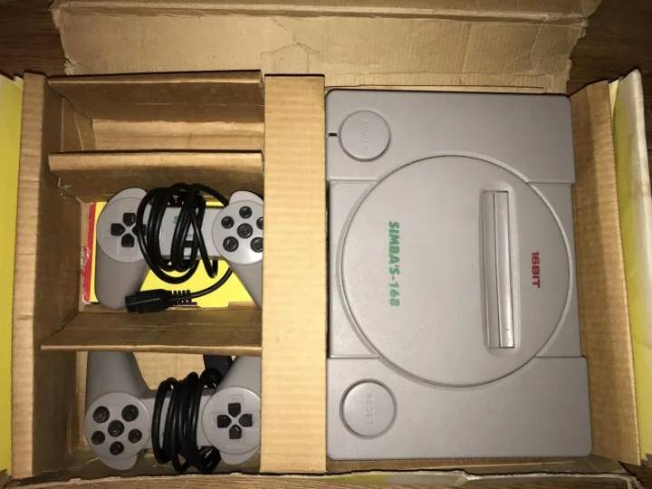

Prey (2017) — my favorite immersive sim
Factorio — a factory-building addiction
Sega Mega Drive and a DOS childhood
From the NES era to the Steam Deck
// notes on this topic
hooked me in recent years
Prey (2017)
A game about loneliness on a space station. A non-trivial plot, interesting mechanics, a strong setting, and decent moral questions.
Factorio
Building a factory, automation, expanding into new territory. I've put 500+ hours into it. Keep me away from it.
Zelda: Breath of the Wild
Just a really high-quality game, pleasant and beautiful. Also several hundred hours in.
retro — discovered as an adult
X-COM: UFO Defense 1993
Defense against aliens. Discovered it in university, periodically come back for a few evenings — and drop it again.
The Legend of Zelda 1986
Surprisingly good, even after already knowing the modern entries. Surprised me how well-thought-out games of that era were — many mechanics have survived to this day almost unchanged.
sega mega drive — a chinese clone, in a first-playstation-style case

not mine, photo from the internet
Urban Strike
Played it a lot, but never managed to beat it as a kid.
Rock n' Roll Racing
Raced a lot, replayed it as an adult too.
Operation Europe: Path to Victory
A wargame, dozens of hours. For a long time I couldn't figure out why saves didn't work — turned out I just needed to put a battery in the cartridge.
from my computer childhood
Gothic 2
An incredibly detailed world that's still interesting to explore. I come back to it every few years.
Rome: Total War
Spent hundreds of hours on it as a kid, and a good amount more as an adult. One of my favorite games. Who doesn't think about the Roman Empire, anyway?
The Suffering
A horror game set in a prison on an island. Memorable, maybe just because it was one of the first games on my own personal computer.
what I play on
MacBook Pro 14″ M1 Max
64 GB — my main machine, also where I play via GeForce Now.
GeForce Now
Streaming via the MacBook — lets me play titles that don't run natively on Mac.
Steam Deck
Base model + Steam Controller. For the couch and for trips.
Nintendo Wii
An early revision with GameCube support: has the ports and an original controller — I play not just Wii games but the previous generation too.
Anbernic RG40XX V
Vertical form factor, for travel — honestly, I rarely take it out.
HP t620 Plus in progress
A thin client — building a mini gaming station for emulation and 2000s games that don't run well on modern hardware. Planning a basic GeForce with 2GB DDR3 and a few native OSes. Put a lot of effort into setting it up, but at some point I fried the motherboard — waiting for a replacement.
Sometimes I fire up something old on them.